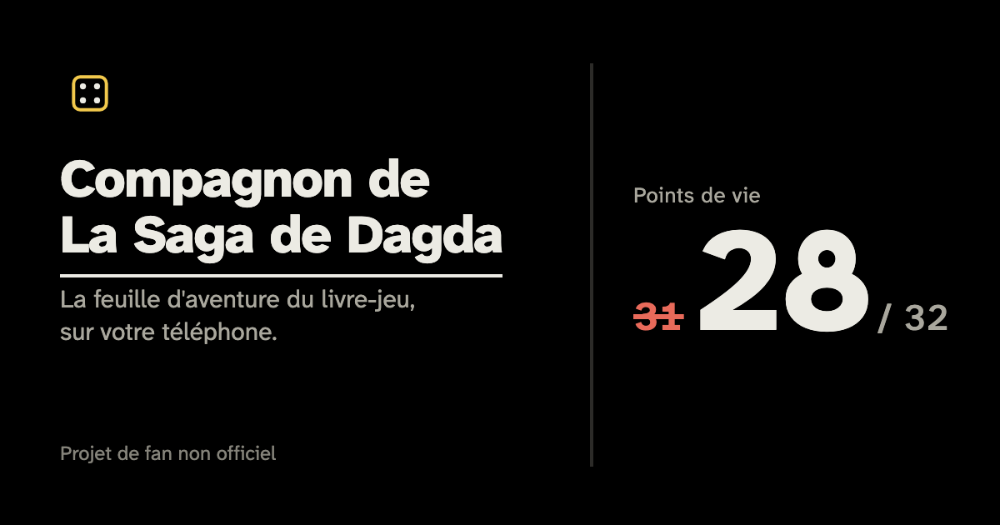

Direction « Ardoise de l'Académie ». Fond noir pur pour les écrans OLED, texte craie, trois craies de couleur à rôle fixe. Chaque écran est montré à 390 × 844 px. Les noms d'objets, d'ennemis et les notes sont des exemples inventés pour la maquette, pas du contenu du livre. Les écrans 13 à 16 montrent la vitrine : Accueil, installation, mentions légales et aperçu de partage ; le pied de page est au bas de l'écran 2.
Le vieux gardien parle d'une porte « qui ne s'ouvre qu'en hiver ».
Ne pas reprendre le chemin du marais : piège au 74.
sticky) : il reste en bas de l'écran pendant toute la feuille, puis s'arrête à sa fin, au-dessus du pied de page, qui défile sous lui.La veille de votre examen à l'Académie de Dagda. Trois choix, puis l'aventure commence au chapitre 1.
Recopiez votre feuille papier. Tout reste modifiable ensuite.
Recopiez la fiche de l'ennemi donnée par le livre.
En 7 tours. Reprenez la lecture au chapitre indiqué par le livre.
Mode narratif · § 98 · 1 adversaire
Suivez ce qu'indique le livre. L'app ne décide rien à votre place.
3 combats · 2 gagnés · 40 PV perdus en tout
La feuille d'aventure du livre-jeu, sur le téléphone posé à côté du livre. Vous lisez, l'app tient les comptes.
Une feuille d'exemple. La vôtre commence vierge.
Projet de fan non officiel · tout reste sur votre téléphone
La feuille d'aventure du livre-jeu, sur le téléphone posé à côté du livre. Vous lisez, l'app tient les comptes.
Une feuille d'exemple. La vôtre commence vierge.
Installée, elle s'ouvre en plein écran depuis son icône et marche sans réseau.
Projet de fan non officiel · tout reste sur votre téléphone
Une feuille d'exemple. La vôtre commence vierge.
Installée, elle s'ouvre en plein écran depuis son icône et marche sans réseau.
Projet de fan non officiel · tout reste sur votre téléphone
Installée, elle s'ouvre en plein écran depuis son icône et marche sans réseau. Votre aventure reste la même.
Sur Android avec Chrome, votre navigateur propose l'installation :
Le bouton « Installer » apparaît en haut de cet écran quand le navigateur le propose.
Menu puis « Installer ».
Bouton Partager puis « Sur l'écran d'accueil ».
Le bouton « Installer » apparaît en haut de cet écran quand le navigateur le propose.
Menu Fichier puis « Ajouter au Dock ».
Ce navigateur n'installe pas les apps web ; l'app marche très bien dans un onglet.
Compagnon de La Saga de Dagda · mises à jour le 23 novembre 2026
Ce site est édité par Benoît Figliuzzi, à titre personnel et non professionnel. Pour le contacter, ouvrez un ticket (« issue ») sur le dépôt GitHub du projet.
« La Saga de Dagda », ses règles, ses noms et son univers appartiennent à leurs auteurs et à leur éditeur. Cette app est un projet de fan non officiel, sans lien avec eux ; elle ne reproduit ni le texte ni les illustrations du livre.
Le code de l'app est sous licence MIT.
L'app ne collecte rien. Votre aventure reste sur votre appareil, dans le stockage du navigateur, et n'est envoyée nulle part.
GitHub, qui héberge le site, conserve des journaux techniques, dont l'adresse IP des visiteurs. Voir sa déclaration de confidentialité.
L'app est fournie telle quelle, sans garantie. Votre aventure n'existe que sur votre appareil : vider les données du navigateur l'efface.
En cas de désaccord entre l'app et le livre, le livre fait foi.
Compagnon de La Saga de Dagda · mises à jour le 23 novembre 2026
Ce site est édité par Benoît Figliuzzi, à titre personnel et non professionnel. Pour le contacter, ouvrez un ticket (« issue ») sur le dépôt GitHub du projet.
« La Saga de Dagda », ses règles, ses noms et son univers appartiennent à leurs auteurs et à leur éditeur. Cette app est un projet de fan non officiel, sans lien avec eux ; elle ne reproduit ni le texte ni les illustrations du livre.
Le code de l'app est sous licence MIT.
L'app ne collecte rien. Votre aventure reste sur votre appareil, dans le stockage du navigateur, et n'est envoyée nulle part.
GitHub, qui héberge le site, conserve des journaux techniques, dont l'adresse IP des visiteurs. Voir sa déclaration de confidentialité.
L'app est fournie telle quelle, sans garantie. Votre aventure n'existe que sur votre appareil : vider les données du navigateur l'efface.
En cas de désaccord entre l'app et le livre, le livre fait foi.

design/apercu-partage/apercu.html.